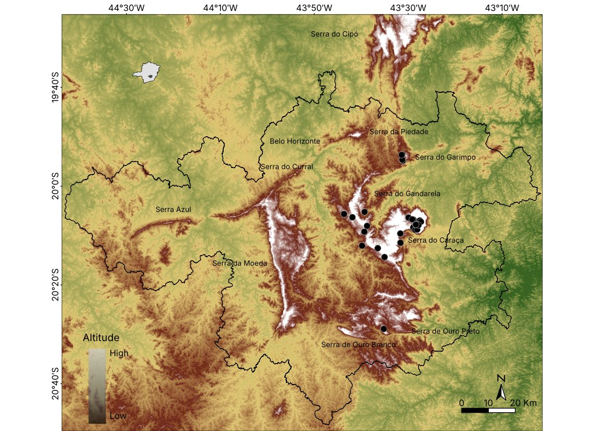
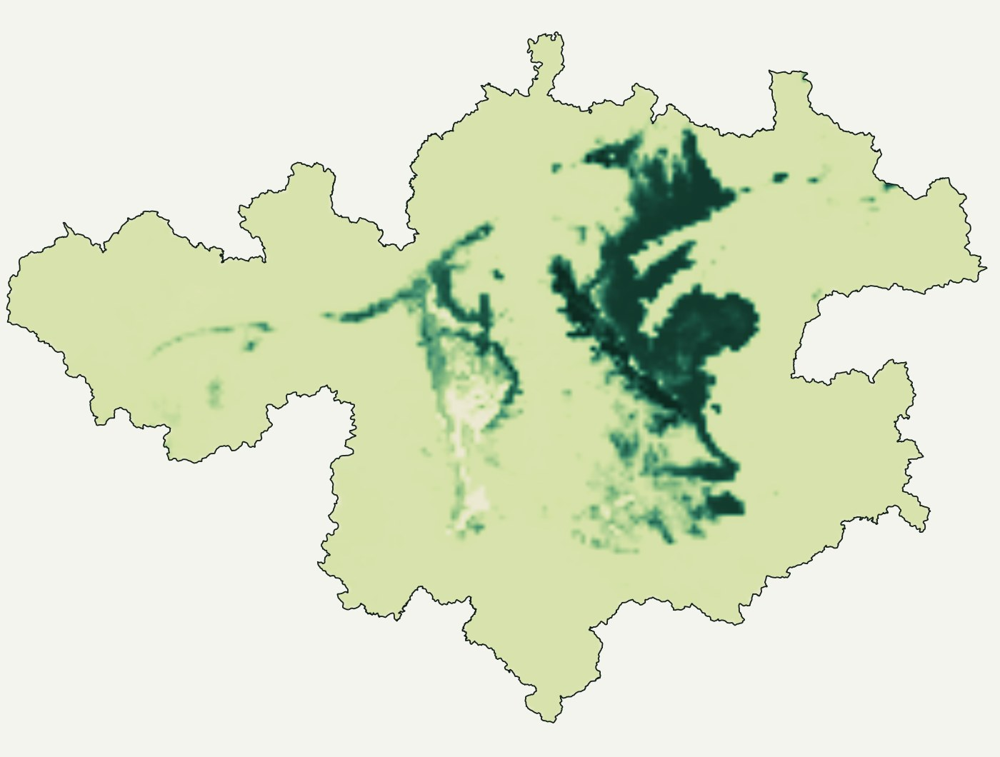
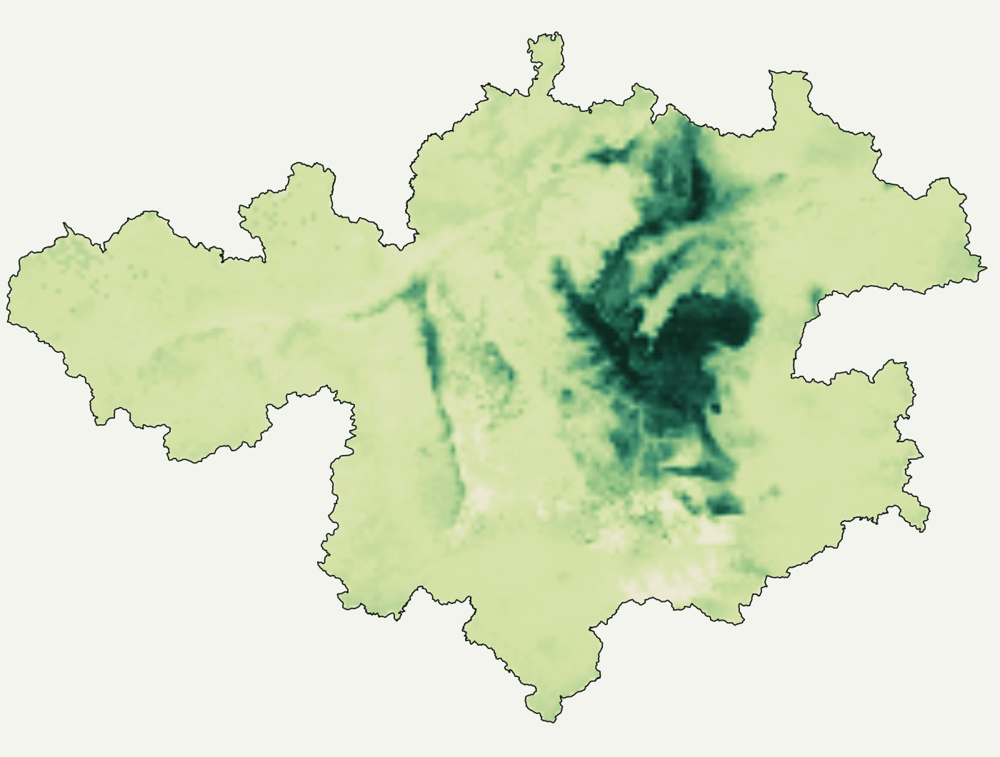
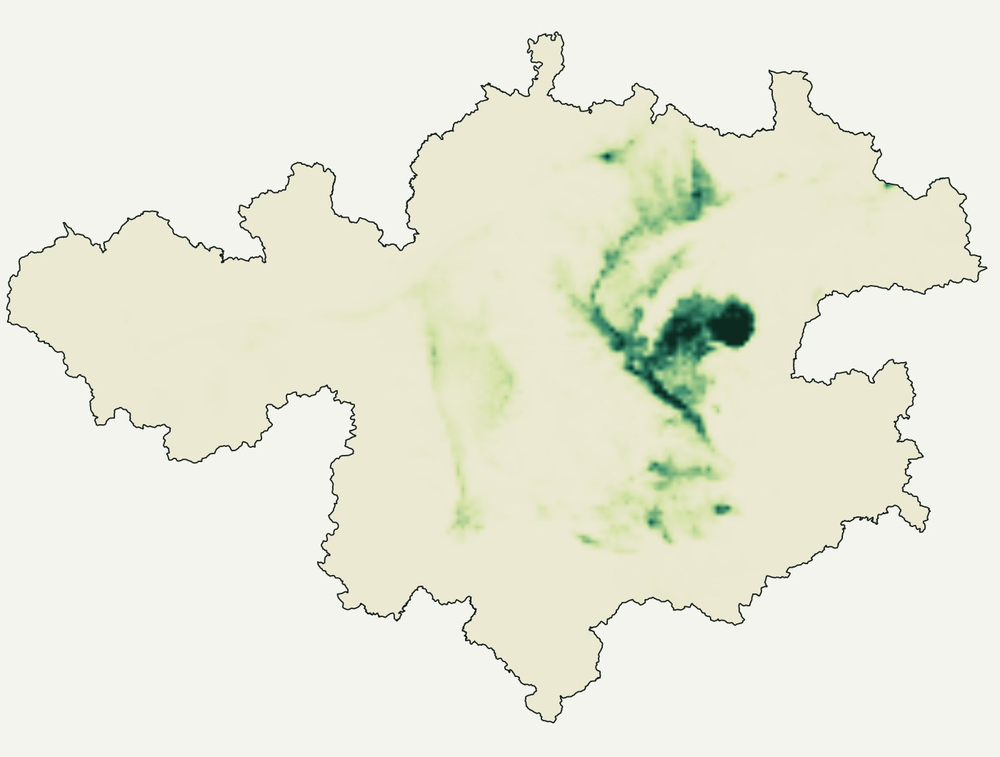
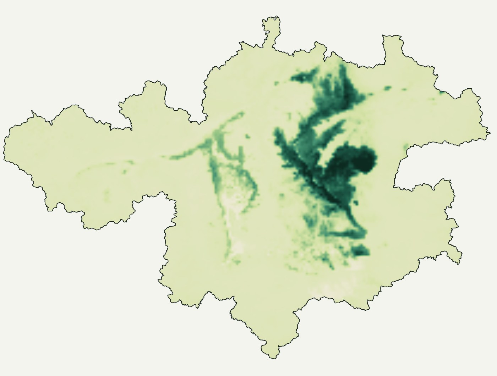
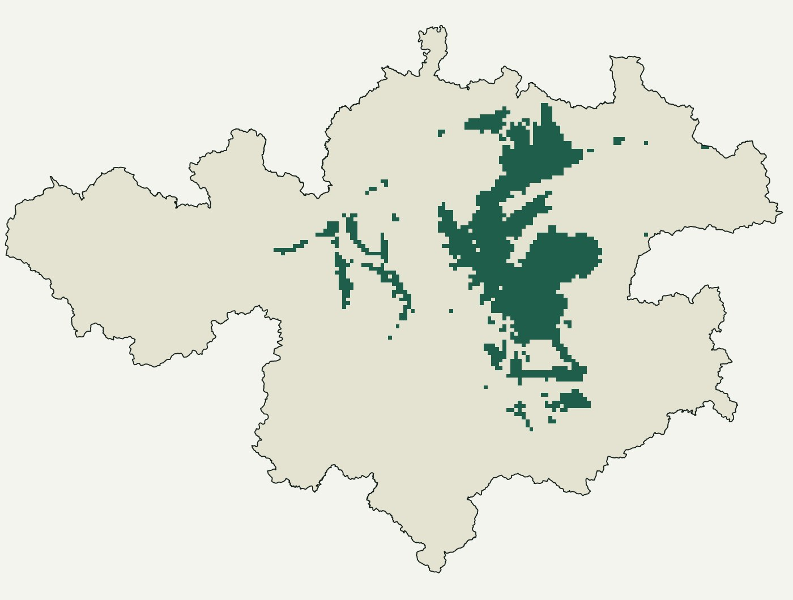

Scinax aff. machadoi: where to look for new populations of an endemic tree frog
A review of collections, three machine-learning algorithms and a consensus to guide fieldwork in a mining region.
- Deliverable
- On-demand technical report, 2021
- Region
- Quadrilátero Ferrífero, Minas Gerais
- My role
- Record compilation, modelling and maps
- Tools
- BioDinamica · MaxEnt · ArcGIS Pro · QGIS






Hypsometry of the Quadrilátero Ferrífero with the records and the main ranges. The species occurs in the Gandarela, Capanema and Caraça massif and in the Serra do Garimpo.
Artificial neural network: one of the broadest predictions of the three algorithms.
Support vector machine: also predicts a broad area, with a smoother gradient.
MaxEnt: the most restrictive algorithm, concentrated on the Caraça massif and surroundings.
Mean of the three algorithms. High suitability is restricted to the ridge tops of the eastern slope of the Quadrilátero.
Consensus converted into presence and absence with the lowest presence threshold. Patches outside the known ranges show where to look for new populations.
Models at about 1 km resolution. Suitability normalized within each algorithm to allow comparison.
The problem
A tree frog of the Scinax catharinae group, possibly an undescribed species, is known only from the Quadrilátero Ferrífero, an intensively mined region in Minas Gerais. Before the field campaigns, the project needed to know where the species had been recorded and where it was worth searching.
The data
A review of eight herpetological collections and 14 studies: 130 specimens or lots in seven municipalities. Coordinates from the collections, from the collectors or georeferenced from the locality description. As predictors, the 19 WorldClim bioclimatic variables and altitude, clipped to the Quadrilátero Ferrífero.
The method
- PCA of the variables, keeping the components that add up to more than 98% of the variance.
- Three machine-learning algorithms: artificial neural network, SVM and MaxEnt.
- Consensus of the three (ensemble forecasting), with the BioDinamica package in Dinamica EGO.
- Presence–absence map using the lowest presence threshold.
- Extent of occurrence by minimum convex polygon, following IUCN.
The result
Suitable area is restricted to the ridge tops of the eastern slope. Outside the known ranges, the consensus points to three fronts to search for new populations.
- Serra da Piedade.
- Ranges near Itatiaia, Lavras Novas and Santo Antônio do Salto, in Ouro Preto, including the Itatiaia Natural Monument.
- Serrinha and Pico do Itacolomi, also in Ouro Preto.
- Records in two protected areas: Serra do Gandarela National Park and the Santuário do Caraça private reserve.
- The model also predicts well-sampled areas where the species probably does not occur, such as Serra do Rola-Moça: history and dispersal are outside the scope of a climate model.